Bulletins neige · Où skier
Des bulletins neige quotidiens pour les skieurs : où est la neige, ce qui arrive et où skier, d'après la carte de neige SnowScope et les stations de mesure. Chaque chiffre vient des données du jour.
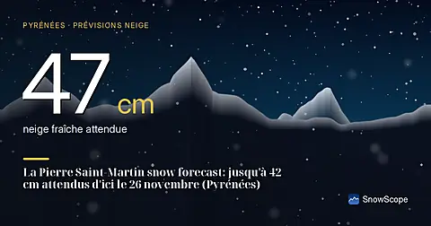
La Pierre Saint-Martin, prévisions neige : jusqu'à 42 cm attendus d'ici le 26 novembre (Pyrénées). À Astun, l'isotherme 0 °C monte entre 1 960 m et …

Alpe d'Huez a reçu 106 cm de neige fraîche en 72 heures au 23 novembre. D'autres poudreuses arrivent, mais attention à la pluie en milieu de semaine.
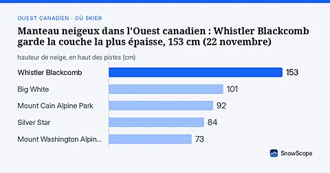
SnowScope classe Whistler Blackcomb premier dans l'Ouest canadien aujourd'hui, avec environ 153 cm sur le haut du domaine, devant Big White …

Whistler Blackcomb recevra 101 cm de neige nouvelle d'ici le 25 novembre, dépassant largement les normes de début de saison. Mount Cain Alpine Park domine la région avec 132 cm prévus.

Mount Washington Alpine Resort devrait recevoir 359 cm de neige nouvelle au cours des 14 prochains jours, avec les chutes les plus importantes la première semaine. Données du 22 novembre 2026.

Cauterets Cirque du Lys domine les Pyrénées avec 24 cm au sommet le 22 novembre. Les chutes de neige prévues le 25 novembre pousseront la couverture de 44 à 51 stations.

La Grave affiche 171 cm en versants supérieurs aujourd'hui, soit 68 % de la normale pour fin novembre. Les Alpes ont enregistré des gains importants ce week-end.

Ce que disent 46 hivers passés sur la neige à Tignes : hauteur habituelle en bas, à mi-pente et au sommet du domaine Tignes – Val d'Isère, mois par mois, les semaines qui ne déçoivent jamais.

Où est tombée le plus de neige fraîche dans les Alpes ? Neige fraîche à Le Reposoir Chalet Neuf : 128 cm en 72 heures, dont 88 cm sur les dernières …

Piau-Engaly se situe à 1 762 m avec des pistes jusqu'à 2 527 m. Sur 46 hivers passés, la profondeur habituelle au sommet est de 88 cm en bas, 123 cm à mi-pente et 159 cm au sommet.
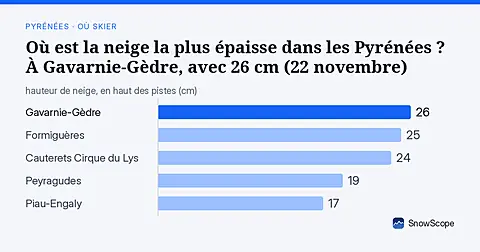
Gavarnie-Gèdre domine les Pyrénées avec 26 cm en altitude le 22 novembre. La couverture neigeuse a triplé en deux jours dans la région.

L'Alpe d'Huez Grand Domaine mois par mois : hauteur de neige habituelle en bas, à mi-pente et au Pic Blanc d'après 46 hivers passés, les semaines sûres, les décembres faibles et la tendance.

Prévisions de neige sur deux semaines pour l'Ouest canadien : Mount Washington Alpine Resort devrait recevoir 202 cm d'ici le 5 décembre, avec les plus fortes chutes le 24 novembre.
Mount Washington Alpine Resort domine avec 76 cm de neige nouvelle prévue au 24 novembre. Données du 21 novembre 2026.

150 cm en haut du domaine : voilà pourquoi Whistler Blackcomb est en tête de notre liste. La neige au sol, la neige des 72 dernières heures, la neige …

Pas de neige sur les pistes de l'Atlas le 21 novembre. Les hauts sommets conservent 1 cm au maximum. Les trois stations sont à nu ; la prochaine tempête peut prendre des semaines.

Pluie au-dessus de 2 980 m à Gavarnie-Gèdre aujourd'hui, mais la neige revient dans quatre jours. Comment s'habiller et quoi apporter face aux conditions changeantes des Pyrénées.
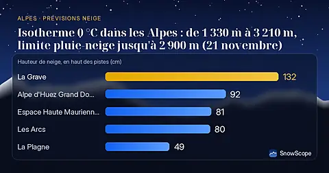
Niveau 0 °C dans les Alpes les prochains jours : 1 330–3 210 m. La limite de neige atteint son maximum à 2 900 m le 22 novembre. Risque de pluie sur neige aux stations d'altitude moyenne dimanche 22 novembre.

Quatorze jours de neige nouvelle dans les Alpes du 22 novembre au 5 décembre : les Deux Alpes reçoivent environ 94 cm, dont 73 % dans la première semaine. Données du 21 novembre.

Bulletin neige Alpes, 21 novembre : Alpe d'Huez accumule 92 cm sur les pentes supérieures. Orelle domine la région avec 136 cm. De la neige fraîche attendue d'ici mardi.

La Pierre Saint-Martin reçoit 18 cm de neige fraîche dans les prochains jours. Les prévisions pour les Pyrénées à partir du 21 novembre montrent la majorité des chutes au-dessus de 1 900 m.

Les Arcs ont reçu 102 cm de neige fraîche au cours des 72 dernières heures avec 80 cm prévus d'ici le 24 novembre. Bulletin SnowScope du 21 novembre.

Les Contamines ont reçu 145 cm de neige en 72 heures ; les pentes supérieures en conservent 115 cm. D'autres chutes sont prévues pour le week-end.

Les Arcs en tête avec 166 cm en altitude. La neige tombe jusqu'à dimanche. Les meilleures pistes sont en altitude et exposées au nord. Données du 20 novembre.

Un mélange de pluie et neige est attendu sur les Pyrénées au cours des trois prochains jours, l'isotherme 0 °C dépassant les sommets des stations dès dimanche. Entre 13 et 24 cm de neige nouvelle prévue en altitude.

Les neiges de début de saison dans les Alpes dépassent de 38 % la moyenne des 46 dernières années. Les pentes intermédiaires de La Plagne accumulent 36 cm de plus que d'habitude à cette date, avec de fortes chutes prévues jusqu'à dimanche.

Choisissez une région, vos dates, votre budget et ce qui compte ; chaque station est classée avec la neige probable au départ, le forfait, l'hôtel et les repas par personne, les chalets à réserver, et un mode jeu.
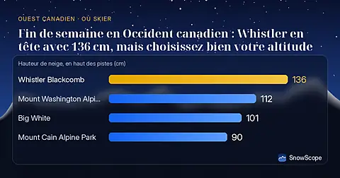
Whistler Blackcomb affiche 136 cm en versants supérieurs cette fin de semaine, mais l'épaisseur diminue rapidement sous 1500 m. Planifiez vos descentes selon l'altitude. Données du 19 novembre.

Forfaits journée alpins dès 36 EUR : neuf stations comparées selon le prix, les kilomètres de pistes et la neige qu'elles reçoivent habituellement, pour trouver la meilleure journée de ski pour votre argent.

Six jours de ski à partir de 191 EUR : nous avons classé dix forfaits de ski pas chers en Europe par prix, puis vérifié 46 hivers passés pour savoir où la neige est fiable.

La neige arrivera aux Pyrénées en deux vagues sur 14 jours, avec 91 cm prévus en altitude. La première semaine apporte 49 % du total ; la semaine 2 reste régulière. Données du 19 novembre.

La surface enneigée a bondi de 560 à 1 710 km² entre le 17 et le 19 novembre. Piau-Engaly conserve la plus grande épaisseur de neige avec 15 cm en altitude le 19 novembre.
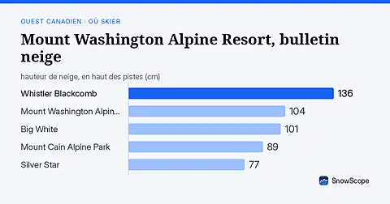
Mount Washington Alpine Resort affiche 104 cm sur les pentes supérieures aujourd'hui. Whistler Blackcomb domine la région avec 136 cm. Données du 18 novembre 2026.

Le niveau de congélation atteint 1 500 m à Banff Sunshine Village le 19 novembre. De la neige fraîche est tombée dans tout l'ouest du Canada au cours des 72 dernières heures, mais la pluie menace la poudreuse nouvelle.

Prévisions Canada occidental : 90 cm de neige nouvelle à Mount Washington au cours des deux prochaines semaines, avec 70 cm attendus fin novembre et début décembre.
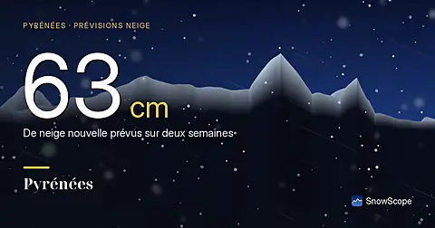
Les Pyrénées vont accumuler jusqu'à 63 cm de neige nouvelle dans les 14 prochains jours, avec 70 % avant le 25 novembre. Données du 18 novembre.

Prévisions de neige fraîche pour les Alpes jusqu'à début décembre. Saint François Longchamp en tête avec 228 cm attendus sur 14 jours, en commençant par 35 cm jeudi.

Bulletin neige Alpes 18 novembre : Orelle en tête avec 111 cm de neige en haut des pentes. Les prévisions du week-end annoncent 100+ cm de neige fraîche dans les grandes stations.
Aucune nouvelle neige attendue à Jbel Hebri ou Oukaïmeden au cours des 14 prochains jours. L'Atlas recevra moins de 1 cm au total jusqu'à début décembre, selon les prévisions du 18 novembre.


96 cm de neige nouvelle prévus aux Arcs sur les trois prochains jours, avec aujourd'hui apportant les chutes les plus importantes ; simulation du 16 novembre.

Whistler Blackcomb a enregistré 76 cm de neige fraîche au cours des dernières 72 heures, et Mount Cain Alpine Park a également reçu 64 cm, en date du 16 novembre 2026.
La Grave domine les Alpes avec 97 cm en versants supérieurs. La couverture neigeuse se réduit alors que le début d'hiver s'installe inégalement dans la région le 15 novembre.

L'Atlas ne retient que 20 km² de neige le 15 novembre, entièrement sur les hauts sommets jusqu'à 4 cm d'épaisseur. Pas de neige aux stations ; aucune n'est prévue jusqu'au 18 novembre.

Mount Washington Alpine Resort domine avec 158 cm au sommet le 15 novembre. La neige fraîche à Whistler Blackcomb et Mount Cain Alpine Park offre aussi d'excellentes conditions pour le ski de novembre.

Bulletin neige Pyrénées 15 novembre : pluie et neige mélangées à Cauterets, 7–19 cm sont tombés en 72 heures près du sommet. D'autres précipitations attendues d'ici le 18 novembre.

À Big White le 15 novembre, les pentes supérieures retiennent 68 cm près du sommet tandis que la base reste dégagée ; un gradient vertical extrême typique du début de saison.

Prévision de 79 cm de neige nouvelle aux Grands Montets du 16–18 novembre, principalement au-dessus de 2 000 m d'altitude selon la prévision de prévision du 15 novembre.

Pluie prévue alors que le niveau de congélation monte à 4 080 m ; la neige mesurée le 15 novembre est fine (moins de 20 cm) dans toutes les grandes stations des Pyrénées.

Les Deux Alpes : combien de neige fraîche ? 38 cm en 72 heures (15 novembre). Où est tombée le plus de neige fraîche dans les Alpes ? La Grave a reçu …

Krvavec mi-montagne a typiquement 13 cm de neige le 15 décembre sur 46 hivers, mais le sol nu dans 11 d'entre eux. Forfait journée 47 EUR.

Skiez sur 157 km de pistes balisées à Serre Chevalier, où le sommet de la montagne a 100 % de chances d'être enneigé d'ici la mi-décembre.

Turracher Höhe a 23 cm à mi-montagne le 15 décembre typique, mais seulement 39 % des hivers atteignent 30 cm là-bas à la mi-décembre. Données du 13 novembre 2026.

Hochkar en moyenne montagne a 38 cm typiquement le 15 décembre, et 63 % des hivers ont eu 30 cm ou plus cette semaine-là. Forfaits journaliers à partir de 32,90 EUR les jours calmes.
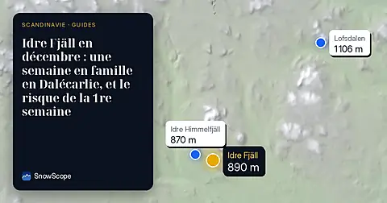
Les chances de neige à Idre Fjäll en décembre s'améliorent nettement après la mi-mois. Le 13 novembre, l'épaisseur typique à mi-montagne le 15 décembre est de 32 cm.

Dix stations de ski européennes classées pour leur rapport qualité-prix en décembre, avec Les 2 Alpes en tête avec 75 cm de neige à mi-montagne.

Boí Taüll commence à 2 039 m et bat Baqueira Beret sur le prix du forfait, bien que la neige de début décembre demande un peu de patience.

Sälen en décembre : 28 cm un 15 décembre typique et 48 % des hivers avec 30 cm à la mi-décembre, moins qu'aux années 1980 ; Trysil, à côté, fait mieux.

Orcières Merlette offre une base élevée à 1 826 m et un forfait 6 jours dès 227 EUR, ce qui en fait un choix fiable pour un séjour au ski en décembre.

Alpe d'Huez vaut-elle le coup en décembre 2026 ? Nous vérifions les probabilités de neige, le prix de départ de 58,00 EUR et comparons avec Les 2 Alpes.

Les forfaits slovènes sont les moins chers (Krvavec 205 EUR les 6 jours), mais la neige naturelle de décembre y est rare ; Lachtal, le Hochkar et le glacier de la Möll font mieux.

Cauterets propose 25 km de pistes pour 46 EUR, mais notre historique d'enneigement montre que la meilleure chance d'avoir de la neige est la dernière semaine de décembre.

Lachtal coûte 62 EUR par jour et les enfants de moins de 7 ans skient gratuitement. À mi-montagne, il y avait 30 cm ou plus dans 72 % des décembres à partir de la mi-mois. Épaisseur de neige au 13 novembre 2026.

Skiez sur les 131 km de pistes de la Forêt Blanche en décembre avec un forfait six jours à 298 EUR.

Le forfait 6 jours de Ruka coûte 265 EUR. Les chances de neige passent de 39 % en début décembre à 85 % à la semaine de Noël. Prévoyez la mi-décembre ou plus tard.
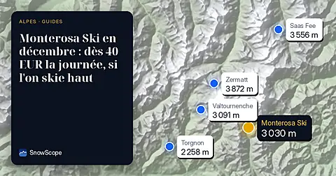
À Monterosa Ski, le forfait journée en ligne va de 40,00 à 71,00 EUR. En décembre, la neige est en altitude : 124 cm habituels à 3 030 m, 6 cm à 1 207 m.

Le 15 décembre à Fellhorn/Kanzelwand : 63 cm au sommet à 1 965 m, 30 cm à mi-montagne, seulement 10 cm à la base à 918 m. Organisez votre séjour en conséquence.

Planifiez votre séjour de décembre 2026 aux Les Orres en comparant les prix des forfaits hebdomadaires avec notre historique de neige de 46 hivers passés.

Mi-montagne à Hemavan compte 82 cm de neige en moyenne le 15 décembre. Chaque hiver depuis 46 ans a eu 30 cm ou plus mi-décembre. Données du 13 novembre 2026.
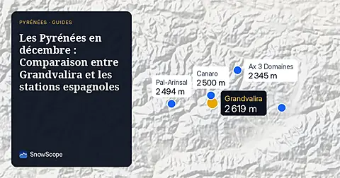
Comparez Grandvalira et les stations espagnoles en décembre 2026 pour les hauteurs de neige, l'altitude des remontées et les prix à partir de 49,00 EUR.

Le Pitztaler Gletscher retient mieux la neige de décembre que la plupart des stations des Alpes : 87 cm à mi-hauteur vers la mi-décembre, avec chaque hiver récent au-dessus de 30 cm. Données du 13 novembre 2026.

Pour une semaine de ski en famille à petit budget à Astún-Candanchú en décembre, visez la fin du mois, quand les pistes supérieures ont une bonne neige dans 67 % des hivers passés.

Seuls la Zugspitze et le Fellhorn supérieur conservent de manière fiable 30 cm à la mi-décembre. Les pistes bavaroises moins élevées offrent des tarifs moins chers mais beaucoup moins de probabilités de neige. Données du 13 novembre 2026.
Puy-Saint-Vincent propose un forfait adulte 1 jour à 44 EUR avec une bonne neige en décembre en altitude, comparé ici à son grand voisin Serre Chevalier.
La base d'Oppdal compte 60 cm de neige un 15 décembre type, avec 93 % des hivers conservant 30 cm ou plus à la mi-décembre. Données de 46 hivers.

Grimentz-Zinal propose 71 km de pistes et un enneigement fiable en altitude pour votre voyage en décembre, avec des forfaits 6 jours à CHF 339,00.
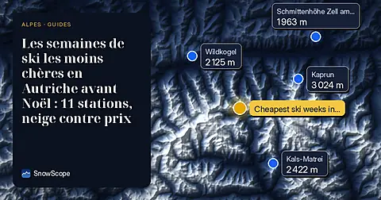
Autriche avant Noël : Galtür 258 EUR et Kühtai 269 EUR les 6 jours, avec 30 cm dans plus de 90 % des hivers ; les glaciers coûtent plus, les petites stations sont un pari.

Vous prévoyez un voyage en décembre à Baqueira Beret ? Consultez notre historique d'enneigement, les prix des forfaits à partir de 70,00 € pour une journée, et comparez avec Astún-Candanchú.

Nous classons les stations de ski françaises selon les probabilités de neige en décembre et le prix des forfaits, à partir de 36,00 EUR pour un forfait journée adulte aux Karellis.

Le mi-versant de Galtür affiche 55 cm le 15 décembre type. Les forfaits basse saison coûtent 55,50 EUR jusqu'au 18 décembre. Données de 46 hivers, 1980-81 à 2025-26.

Le secteur médian de Geilo reste skiable en décembre dans 96 % des cas. Épaisseur type le 15 décembre : 42 cm en bas, 57 cm au milieu, 68 cm en haut. Forfait journée à partir de 590 NOK.

Grandvalira est souvent vendue comme une destination pas chère en décembre, pourtant la neige naturelle à la base n'atteint en moyenne que 9 cm lors des hivers passés.
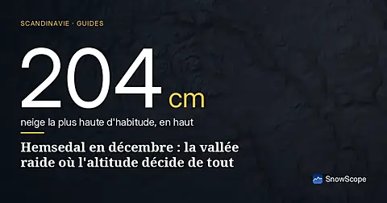
Le 15 décembre, Hemsedal affiche 32 cm en bas, 70 cm à mi-montagne et 106 cm en haut. L'altitude est décisive ici.

Le 15 décembre à 3 245 m, Hintertux affiche 98 cm de neige sur 46 hivers d'historique. Chaque hiver a reçu 30 cm ou plus la semaine avant Noël à cette altitude.

Comparez les probabilités de neige en décembre et les tarifs vérifiés de forfaits dès 40,00 EUR dans les domaines skiables italiens pour votre week-end en voiture.

La base de Kühtai à 1 939 m reste enneigée de manière fiable en décembre. Le 15 décembre en moyenne 60 cm à la base, 72 cm à mi-montagne, 112 cm au sommet. Forfait basse saison 6 jours 269 EUR jusqu'au 18 décembre.

Les 2 Alpes culmine à 3 511 m pour de la neige abondante en décembre 2026, avec un forfait adulte 6 jours à 266,50 EUR.

Les Karellis propose 45 km de pistes et un forfait adulte 6 jours à 191,00 EUR avec 98 % de chances d'avoir de la neige à mi-montagne fin décembre.
La neige de décembre à Levi s'est renforcée au fil du temps. Ces 15 derniers hivers : 100 % des semaines de Noël ont eu 30 cm ou plus. Profondeur typique 15 décembre : 38 cm. Données 13 novembre 2026.

Skiez à Livigno pour 51,50 EUR par jour avant le 18 décembre, quand la neige au sommet atteint 30 cm dans 100 % des hivers passés.

Montgenèvre affiche 56 cm de neige habituelle en décembre à son pied de station, offrant aux skieurs du week-end une meilleure couverture précoce que Sestriere, de l'autre côté de la frontière.

Skier à Obertauern en décembre : 43 cm un 15 décembre typique à mi-pente, forfait 6 jours à 331 EUR avant Noël. Historique de neige et prix.

Pila, au-dessus d'Aoste, combine un forfait journée fixe à 60,00 EUR et une neige fiable en décembre sur ses pistes d'altitude.

Les remontées de Saas-Fee atteignent 3 556 m, où notre historique montre que 100 % des hivers passés ont au moins 30 cm de neige à la mi-décembre.

À mi-montagne, la neige atteint 30 cm dans 83–100 % des décembres en Scandinavie. Tarifs fixes en Finlande ; tarification dynamique en Norvège et Suède. Données de 46 hivers, 13 novembre 2026.

Découvrez les pistes tranquilles de St-Luc Chandolin, où la neige à mi-montagne atteint 30 cm dans 98 % des hivers fin décembre.

Trysil en décembre : 44 cm à mi-pente un 15 décembre typique, 83 % des hivers avec 30 cm à la mi-décembre ; les prix sont dynamiques, réservez tôt.
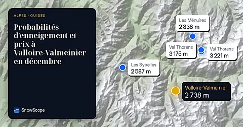
Valloire-Valmeinier propose 131 km de pistes et 98 % de chances d'avoir 30 cm de neige à mi-montagne mi-décembre.

Le glacier de Zugspitze a 122 cm de neige typique le 15 décembre à 2 627 m ; le sommet de Garmisch-Classic en a 57 cm. Même prix, enneigement différent. Données de 46 hivers.

Mölltaler Gletscher en décembre : 66 cm en bas (2103 m) et 128 cm à mi-pente un 15 décembre typique ; forfait 6 jours basse saison à 332 EUR.

Un débutant prudent peut-il faire confiance à Courmayeur en décembre, alors que la moyenne à mi-montagne est de 60 cm de neige sur nos hivers passés ?

Pluie et neige mélangées dans les Pyrénées le 14 novembre : Cauterets Cirque du Lys domine la région avec 13–20 cm en 72 heures, mais la pluie tombe sous 2 340 m.
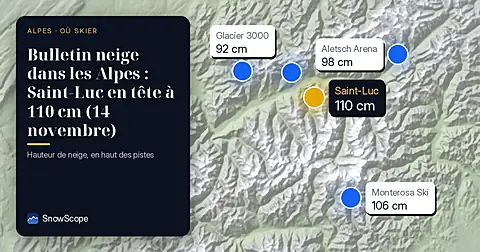
Bulletin neige dans les Alpes, 14 novembre. Pour trouver le plus de neige dans les Alpes aujourd'hui, regardez Saint-Luc (Suisse) : environ 110 cm en …

Åre en décembre : 40 cm à mi-pente un 15 décembre typique, 89 % des hivers avec 30 cm à la mi-décembre, mais une forte baisse au sommet depuis les années 1980.

Poudreuse fraîche dans trois stations des Pyrénées, neige mince partout, et journées chaudes qui risquent de former une croûte. Voici ce qu'il faut emporter et porter le 14 novembre.
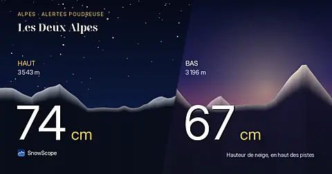
Les Deux Alpes : 38–42 cm de neige fraîche en 72 heures (Alpes, 14 novembre). La Grave a reçu 53 cm de neige fraîche en 72 heures, dont 7 cm au cours …
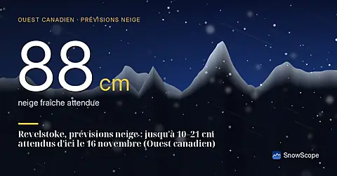
Revelstoke, prévisions neige : jusqu'à 10–21 cm attendus d'ici le 16 novembre (Ouest canadien). À Whistler Blackcomb, l'isotherme 0 °C monte entre …
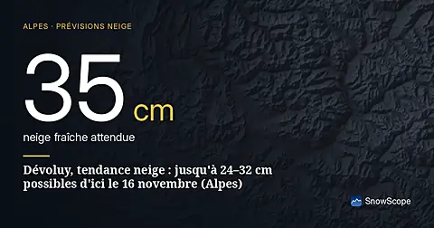
Dévoluy, tendance neige : jusqu'à 24–32 cm possibles d'ici le 16 novembre (Alpes). D'ici le 16 novembre, notre prévision donne 35 cm à Orcières …

La neige se retire vers les plus hauts sommets de l'Atlas. Les trois stations de ski n'ont pas de neige aujourd'hui ; 40 km² de crêtes restent blanches. D'autres fonte en perspective.

Ce weekend dans les Alpes : La Grave en tête avec 78 cm, Pfelders 133 cm sur les pentes supérieures, Les Deux Alpes 52 cm. De la neige fraîche arrive samedi et dimanche. Données du 13 novembre.

L'isotherme 0 °C décide si les montagnes stockent de la neige ou rendent de la pluie : ces prochains jours, notre prévision la place entre 2 230 m et …

La Grave domine les Alpes avec 78 centimètres et 61 centimètres de neige fraîche en 72 heures, alors que 33 centimètres supplémentaires sont prévus.

Entre 1 380 m et 3 410 m : c'est là que notre prévision place l'isotherme 0 °C dans l'Ouest canadien ces prochains jours. Aux heures les plus douces, …

Prévisions neige Pyrénées sur deux semaines : Gavarnie-Gèdre mène 6 stations avec 36 cm de neige nouvelle d'ici le 26 novembre. Données du 12 novembre.

Saint François Longchamp n'a que 3 cm de neige, soit 12 % de l'enneigement habituel à cette époque, mais 110 cm sont prévus au cours des deux prochaines semaines.

Prévision de neige sur deux semaines pour les stations Atlas montre pratiquement aucune neige nouvelle attendue du 13 au 26 novembre. Les données SnowScope proviennent du 12 novembre.

Whistler Blackcomb affiche 116 cm sur les pentes supérieures au 12 novembre, avec 83 cm prévus au cours des trois prochains jours. Mount Washington Alpine Resort domine la région avec 162 cm.
Piau-Engaly le 12 novembre : niveau de congélation à 3 060 m apporte un risque de pluie malgré 16 cm de neige fraîche en 72 heures.

Bulletin neige dans l'Atlas (Maroc), 12 novembre. Stations de l'Atlas aujourd'hui : pas de neige sur les pentes. De la neige seulement sur les plus …